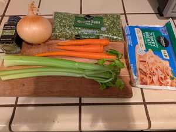
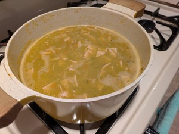

Split Peas Soup
 
Ingredients:
- 1 carrot, chopped
- 2 celery stalks, chopped
- 1 yellow onion, chopped
- 2 bay leaves
- 1 pound of split peas, rinsed
- 6 cups of chicken stock
- Smoked turkey or turkey bacon
- Spices: 2 tsp of salt, pepper, smoked paprika, and cayenne pepper.
Instructions:
- Sauté: In a large pot or Dutch oven, sauté the chopped carrot, celery, and onion until softened. Add spices.
- Combine: Add the rinsed split peas, chicken stock, smoked turkey, and bay leaves.
- Simmer: Bring the mixture to a simmer.
- Cook: Reduce the heat, cover, and cook until the peas are tender, about 45 to 60 minutes, or until desired consistency. Remember to remove the bay leaves before serving!
- Blend in hand blender or whatever you have